研究资料目录与说明
现代麻雀技术论 · 日文 PDF · 第 317–317 页
译文与整理说明
317暂定版语义及封面unknown经独立限定审；其它文字、图和顺序继承原父审。六条非原文范围说明实际随正文展示，旧needs-repair/raw不改，用户内容审核待完成。
【审校范围（非原文）1/6】保留「新战术论」标题、书名及最新版和暂定版的强调。p.317
【审校范围（非原文）2/6】保留完整的八项目录及结构或 URL 可能变更的提示。p.317
【审校范围（非原文）3/6】三个实际文本字段须保持一致。p.317
【审校范围（非原文）4/6】特别奖条目下方的署名须保持完整 unknown，不列具体姓名或备选拼写，也不从正文反填。p.317
【审校范围（非原文）5/6】右上宣传小字及其完整译意、主标题旁假名读音、January 下方极小文字均保持 unknown。p.317
【审校范围（非原文）6/6】保留可辨的封面内容、相邻刊载消息及图中其他已描述元素。p.317
现代麻将技术论－战术论 http://yabejp.web.fc2.com/mahjong/archives.htmlp.317

完整牌例文字与牌编码
蓝色粗体、灰色阴影的网站标志文字：「现代麻将技术论」。
～麻将界最强战术论发表～ 结合最前沿的研究成果与强豪雀士的打法，通过缜密考察，展开由此构建的最强理论。p.317
索引 战术论 研究开发资料 专栏 参考资料 书籍介绍p.317
新战术论 以暂定版形式公开正在《新现代麻将技术论》中发表的最新版战术论。 ※由于是暂定版，结构或URL可能发生变更。p.317
1．麻将技术论 2．牌理概要 3．独立搭子理论 4．复合搭子理论 5．搭子理论补充 6．孤立牌理论 7．多面听牌形理论 8．面子理论p.317
超越街机麻将的免费3D在线麻将游戏登场！！ 免费3D在线麻将游戏《雀龙门》 ・可以体验真实麻将的临场感与紧张感。 ・仅用鼠标操作，任何人都能轻松享受激烈的对局。 ・对局中的语音演出、手部动作等，为对局增添气氛的要素一应俱全。p.317
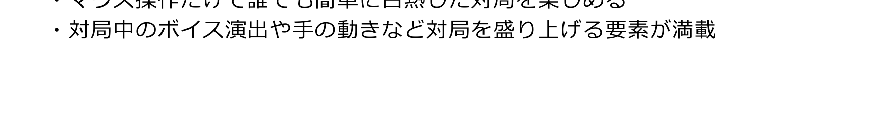
完整牌例文字与牌编码
所分配的图像块为空白横条，没有可见文字或图案。
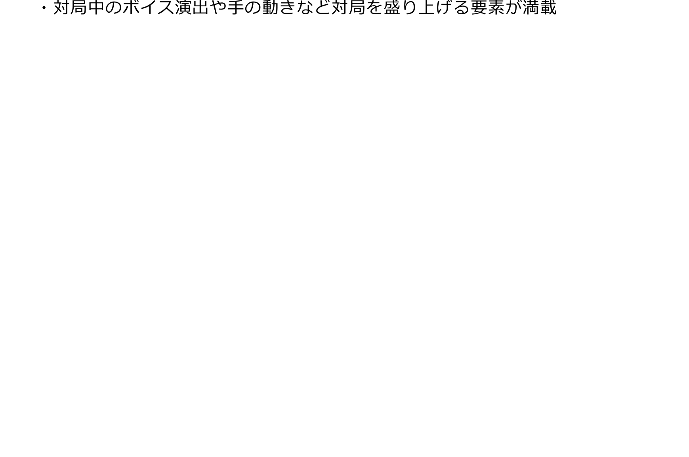
完整牌例文字与牌编码
所分配的图像块为大幅白色空白区域，没有可见文字或图案。

完整牌例文字与牌编码
绿色背景的获奖宣传图，文字为：「日本麻将博客大奖2009」「荣获最高奖」「现代麻将技术论」「撰稿人：ネマタ 网站制作者：や～べ」。
站内搜索
※请从这里搜索本站的文章、术语等。 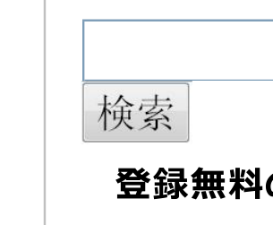搜索按钮
免费注册的网络麻将！p.317
获《月刊网络麻将》2010年1月号刊载！p.317
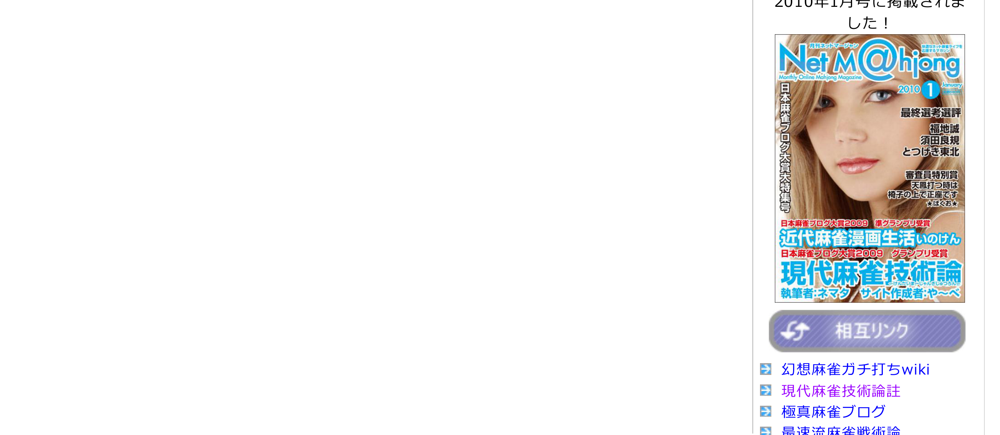
完整牌例文字与牌编码
本区域包含杂志封面、两块左栏空白图像、友情链接横幅及第一条链接前的箭头图标。 杂志封面以一名女性的面部照片为背景，刊名为《月刊网络麻将》，英文标志为「Net M@hjong」，英文说明为「Monthly Online Mahjong Magazine」；期号为2010年1月，另标「January」。左侧竖排文字为「日本麻将博客大奖大特集号」。右侧文字为「最终评选评语」，列出福地诚、须田良规、とつげき東北；其下为「评委特别奖」「打天凤时跪坐在椅子上」，署名无法可靠辨认。封面下部依次写有：「日本麻将博客大奖2009 荣获亚军」「近代麻将漫画生活 いのけん」「日本麻将博客大奖2009 荣获最高奖」「现代麻将技术论」「撰稿人：ネマタ 网站制作者：や～べ」。主标题旁还印有假名读音，但无法可靠逐字辨认。封面右上角另有两行细小宣传文字，无法可靠逐字辨认。 左栏两块图像均为空白。紫色圆角横幅左侧有白色相互连接的箭头图案，文字为「友情链接」。第一条链接前有一个带灰色边框的蓝色方形图标，内为白色向右箭头。 【来源未知项】 杂志封面右上角两行宣传小字过小，无法可靠逐字辨认。 评委特别奖条目下方的星号夹署名模糊，无法可靠辨认完整字形。 主标题旁的假名读音过小，无法可靠逐字辨认。 封面右上“January”下方的极小文字分辨率不足，无法可靠辨认。
幻想麻将认真打wiki
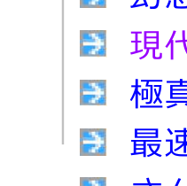 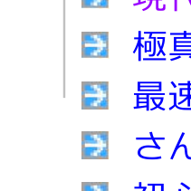 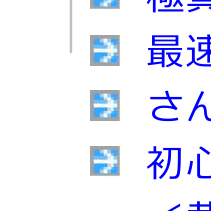 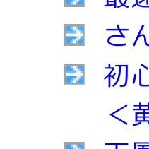 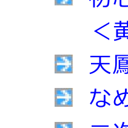 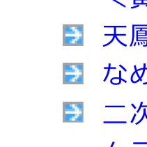 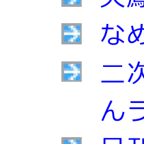 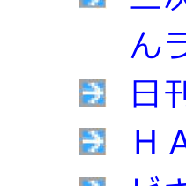 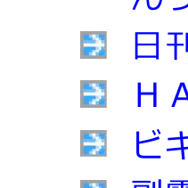 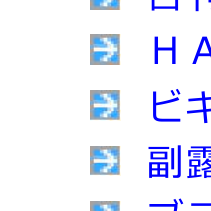 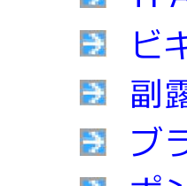 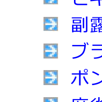 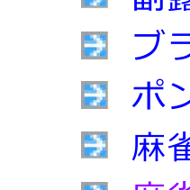 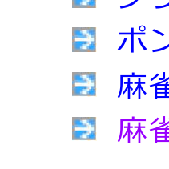decorative：友情链接箭头现代麻将技术论注
decorative：友情链接箭头极真麻将博客
decorative：友情链接箭头最速流麻将战术论
decorative：友情链接箭头三麻四麻blog
decorative：友情链接箭头面向初学者的麻将讲座〈围绕黄金牌的故事〉
decorative：友情链接箭头天凤，避免末位的日子
decorative：友情链接箭头なめとん的麻将BLOG
decorative：友情链接箭头科学研究二次元 | りーりん实验室
decorative：友情链接箭头日刊鸵鸟蛋
decorative：友情链接箭头HAZ的研究人生
decorative：友情链接箭头新手的好运
decorative：友情链接箭头副露海冬
decorative：友情链接箭头兄控女高中生的天凤反省簿
decorative：友情链接箭头碰与吃的冷冻库
decorative：友情链接箭头麻将一番街
decorative：友情链接箭头麻将概论p.317
第1页，共3页 2014-03-02 11:35p.317